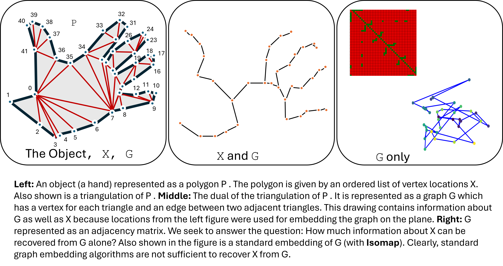

The capability to learn latent representations plays a key role in the effectiveness of recent machine learning methods. An active frontier in representation learning
is understanding representations for combinatorial structures which may not
admit well-behaved local neighborhoods or distance functions. For example, for
polygons, slightly perturbing vertex locations might lead to significant changes in
their combinatorial structure (expressed as their triangulation or visibility graph)
and may even lead to invalid polygons. In this paper, we investigate representations
to capture the underlying combinatorial structures of polygons. Specifically,
we study the open problem of Visibility Reconstruction: Given a visibility graph
G, construct a polygon P whose visibility graph is G. Visibility Reconstruction
belongs to the Existential Theory of Reals (∃R) complexity class (which lies between NP and P-SPACE).
Currently, reconstruction algorithms are available only for specific polygon classes. Establishing the hardness of the general problem is
open.
We introduce VisDiff, a novel diffusion-based approach to reconstruct a polygon
from its given visibility graph G. Our method first estimates the signed distance
function (SDF) of P from G. Afterwards, it extracts ordered vertex locations
that have the pairwise visibility relationship given by the edges of G. Our main
insight is that going through the SDF significantly improves learning for reconstruction. In order to train VisDiff, we make two main contributions: (1) We
design novel loss components for computing the visibility in a differentiable manner and (2) create a carefully curated dataset. We use this dataset to benchmark
our method and achieve 21% improvement in F1-Score over standard methods.
We also demonstrate effective generalization to out-of-distribution polygon types
and show that learning a generative model allows us to sample the set of polygons with a given visibility graph. Finally, we extend our method to the related
combinatorial problem of reconstruction from a triangulation. We achieve 95%
classification accuracy of triangulation edges and a 4% improvement in Chamfer
distance compared to current architectures. Lastly, we provide preliminary results
on the harder visibility graph recognition problem in which the input G is not
guaranteed to be a visibility graph.
